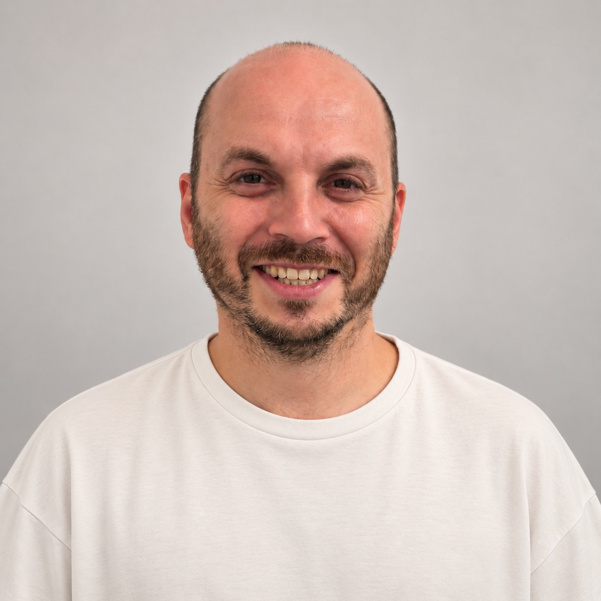
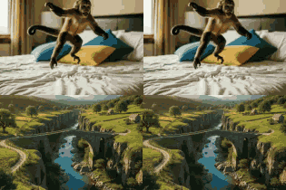
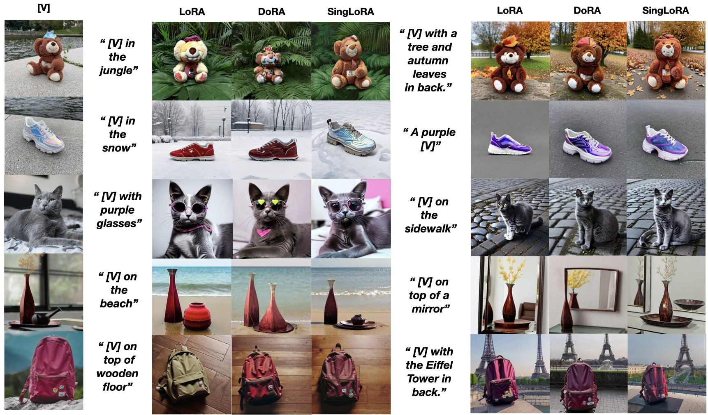
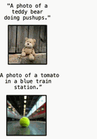
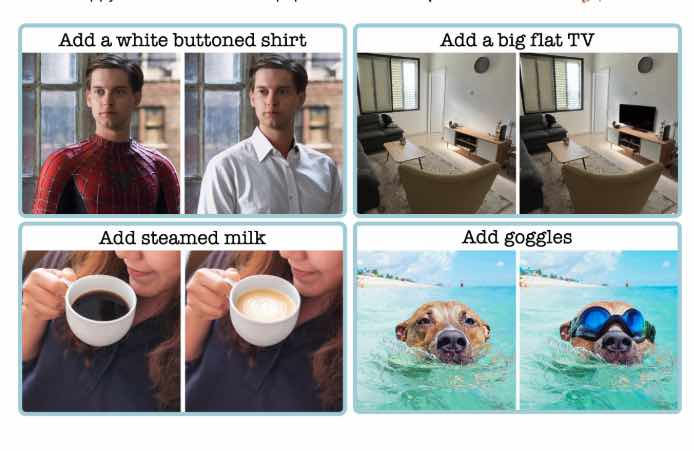
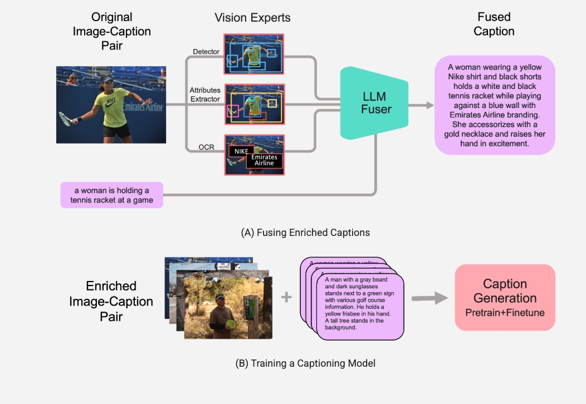
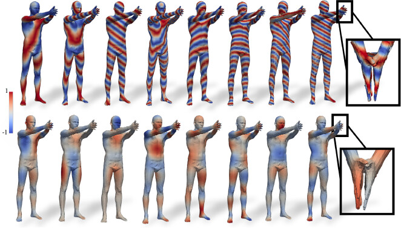
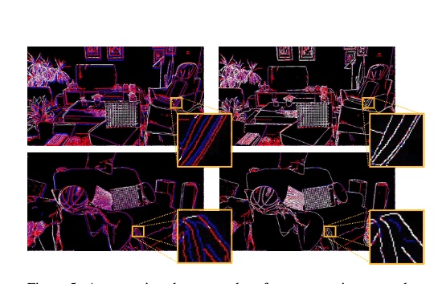
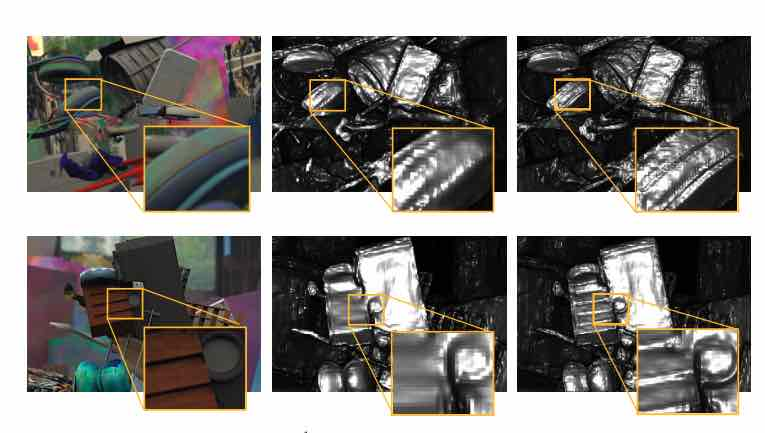

Noam Rotstein
Senior Research Scientist at NVIDIA
About Me
I’m Noam Rotstein, a Senior Research Scientist at NVIDIA, where I focus on controllable image and video generation. My PhD research at the Technion, advised by Prof. Ron Kimmel, has spanned several areas of computer vision, from 3D geometry and multimodal learning to diffusion models for image and video editing and control. Previously, I was the first member of the AI team at Lumana, where I contributed to developing next-generation AI-powered video analytics products.
Publications
* indicates equal contribution

CaricatureGS: Exaggerating 3D Gaussian Splatting Faces with Gaussian Curvature
Eldad Matmon, Amit Bracha, Noam Rotstein, Ron Kimmel
3DV 2026

Time-to-Move: Training-Free Motion Controlled Video Generation via Dual-Clock Denoising
Assaf Singer*, Noam Rotstein*, Amir Mann, Ron Kimmel, Or Litany
ICLR 2026

SingLoRA: Low Rank Adaptation Using a Single Matrix
David Bensaïd, Noam Rotstein, Roy Velich, Daniel Bensaïd, Ron Kimmel
ICLR 2026 DeLTa Workshop

Pathways on the Image Manifold: Image Editing via Video Generation
Noam Rotstein, Gal Yona, Daniel Silver, Roy Velich, David Bensaïd, Ron Kimmel
CVPR 2025

Paint by Inpaint: Learning to Add Image Objects by Removing Them First
Navve Wasserman*, Noam Rotstein*, Roy Ganz, Ron Kimmel
CVPR 2025

Fusecap: Leveraging Large Language Models for Enriched Fused Image Captions
Noam Rotstein*, David Bensaïd*, Shaked Brody, Roy Ganz, Ron Kimmel
WACV 2024

Partial Matching of Nonrigid Shapes by Learning Piecewise Smooth Functions
David Bensaïd, Noam Rotstein, Nelson Goldenstein, Ron Kimmel
SGP 2023


Depth Refinement for Improved Stereo Reconstruction
Amit Bracha, Noam Rotstein, David Bensaïd, Ron Slossberg, Ron Kimmel
2021
Education
- PhD in Computer Science (Direct Track) – Technion – Israel Institute of Technology (2021–Present)
-
B.Sc. in Electrical Engineering – Technion – Israel Institute of Technology
- Graduate of the Research-oriented Excellence Program of the EE faculty (EMET)
- Summa Cum Laude
Professional Experience
-
NVIDIASenior Research Scientist
October 2026–PresentResearch Scientist Intern – Worked on bridging video generation and 3D animation.
March 2026–September 2026 -
AI Research Scientist – First member of the AI team; contributed to the development of next-generation AI-powered video analytics products.February 2022–March 2026
-
TechnionTeaching Assistant – Introduction to Machine Learning course, Faculty of Computer Science.October 2021–May 2022
-
Intel CorporationComputer Vision Algorithm Researcher – Intel RealSense 3D capture technology.February 2020–November 2020
-
Eye-MindersComputer Vision EngineerJuly 2018–November 2018
Patents
-
Multimedia intelligence agent
Ron Kimmel, Ron Slossberg, Aviad Zabatani, Sagi Ben Moshe, Ofir Mulla, Noam Rotstein, Tomer Weiss
US Patent 12,699,727, 2026 -
Techniques for classifying custom object states in visual content
Ron Slossberg, Aviad Zabatani, Noam Rotstein, Ofir Mulla, Amit Bracha, Ron Kimmel
US Patent 12,755,518, 2026 -
Techniques for augmented machine learning with respect to variations of objects
Noam Rotstein, Ron Slossberg, Aviad Zabatani, Ofir Mulla, Amit Bracha, Ron Kimmel
US Patent App. 18/539,897, 2025 -
Hybrid machine learning architecture for visual content processing and uses thereof
Ofir Mulla, Noam Rotstein, Amit Bracha, Ron Kimmel, Aviad Zabatani, Ron Slossberg, Sagi Ben Moshe
US Patent App. 18/145,301, 2024 -
Custom object tracking using hybrid machine learning
Ofir Mulla, Noam Rotstein, Amit Bracha, Ron Kimmel, Aviad Zabatani, Ron Slossberg, Sagi Ben Moshe
US Patent App. 18/186,517, 2024
Contact
For inquiries or collaboration, please email me at rotsteinnoam@gmail.com.